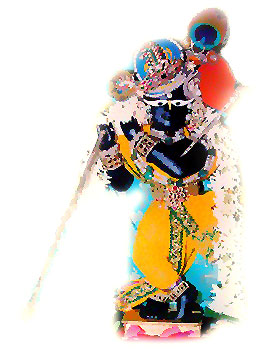

Por Srila Atulananda Acarya 01. Vamos a Vrindavan 02. Advenimiento 03. Bhumi afligida 04. Advenimiento 05. Oh Yamuna 06. En brazos de Yasoda 07. Muerte de la Bruja 08. Mala y Fea 09. Gopis, Gopis, vengan ya! 10. Los 10 nombres de Visnu 11. Los Pastorcillos de Vacas 12. La Bruja Putana 13. Yasoda ata a Krishna 14. Corre Corre sin parar (Damodara) 15. La Serpiente Kaliya 16. Bailando sobre Kaliya 17. Govardhan 18. Krishna Bautisado como Govinda 19. Govinda, Govinda 20. Y cuando tu corazón sea suave como la mantequilla...
Por Srila Atulananda Acarya
Por Sukadeva das
Por Akarma das

Vrindavan Dham - India